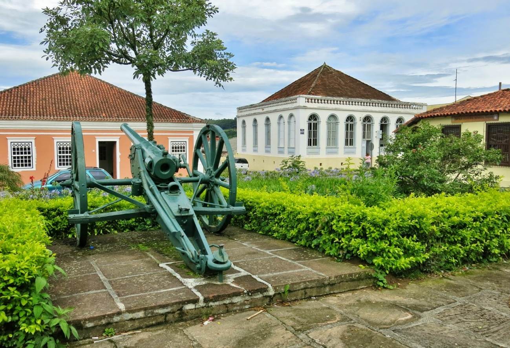
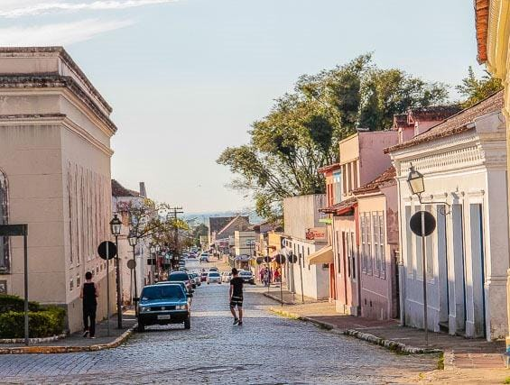
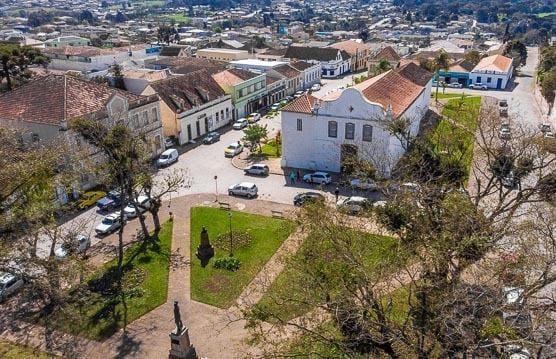
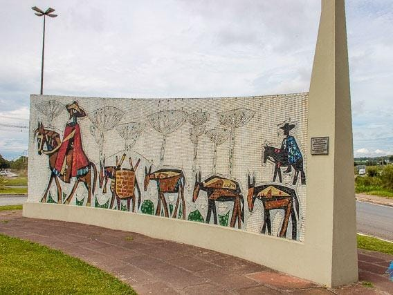

Detalhes do Roteiro
A cidade histórica da Lapa, no Paraná, oferece diversos pacotes turísticos adaptados para a melhor idade, proporcionando conforto, acessibilidade e uma rica imersão na história e cultura local.
A cidade da Lapa originou-se de um pequeno povoado às margens da antiga estrada da mata – uma parte do histórico caminho que ligava Viamão (RS) a Sorocaba (SP).
A cidade é cultural, religiosa e historicamente muito rica, além de possuir a quarta maior área territorial do Paraná. A gastronomia lapeana é rústica, farta e recebeu a influência do movimento tropeirista. Neste passeio você visitará a Gruta do Monge, conhecerá os casarões e residências de oficiais do exército que combateram na Guerra Federalista. O passeio conta ainda com uma visita ao Santuário de São Benedito, à Casa de Câmara e Cadeia, ao Museu das Armas, à Casa Vermelha, ao Panteon dos Heróis, ao Teatro São João e ao Monumento do Tropeiro.
Serviços incluídos no pacote:
Translado privativo in/out;
Tour na cidade da Lapa;
Almoço e sobremesa;
Tarifas
| N° de pessoas | Guia bilíngue | Valor por pessoa |
|---|---|---|
| 2 a 8 | Não | R$ 470.00 |
| 2 a 8 | Sim | R$ 550.00 |
Galeria de Fotos



